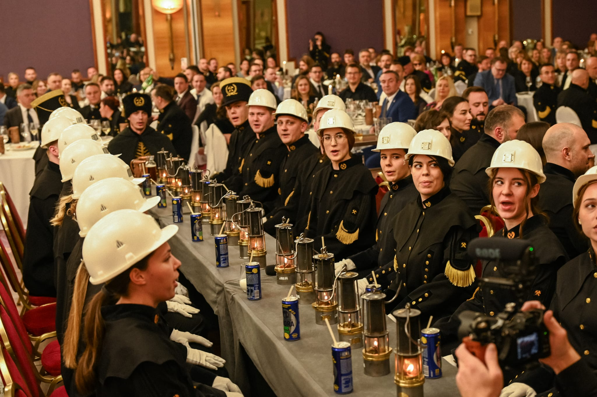
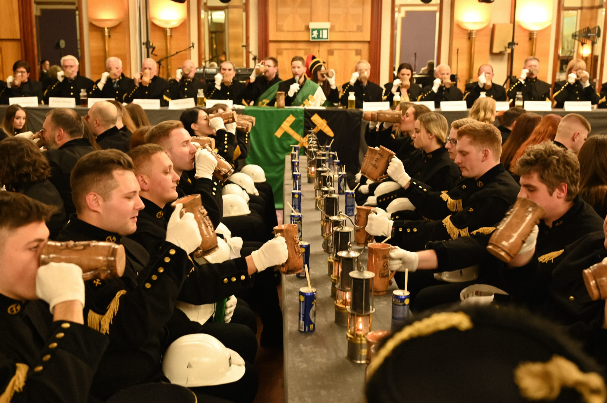
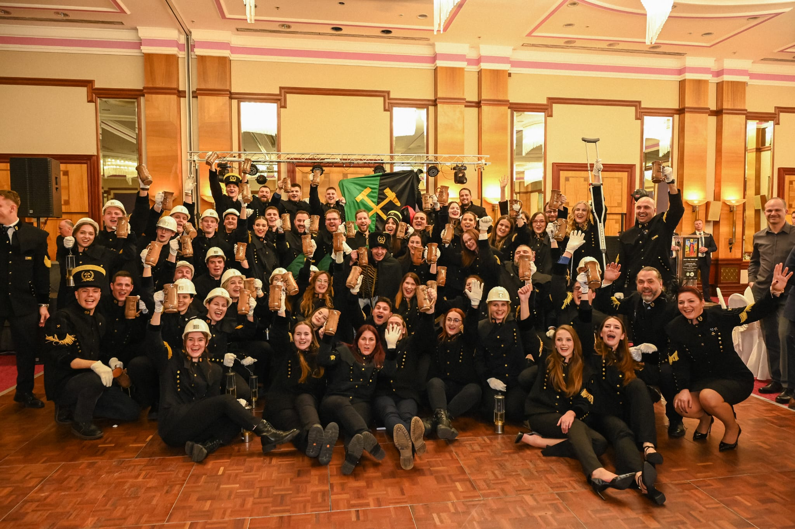

Udruga „Sretno!” i studenti Rudarsko-geološko-naftnog fakulteta Sveučilišta u Zagrebu ponosno njeguju europsku rudarsku baštinu. Kroz drevni ceremonijal skoka preko kože, brucoši rudarstva, geologije i naftnog rudarstva polažu prisegu vjernosti struci, kolegijalnosti i zajedništvu.

Rudarsko-geološko-naftni fakultet Sveučilišta u Zagrebu
Prvi Skok u Zagrebu
Dan Svete Barbare
Uvaženih uzvanika
Pozdrav „SRETNO!”
Udruga „Sretno!” okuplja sadašnje i bivše studente Rudarsko-geološko-naftnog fakulteta Sveučilišta u Zagrebu. Prvenstvena zadaća Udruge je promoviranje rudarske tradicije organiziranjem cjelovitog ceremonijala Skoka preko kože i popratnih manifestacija.
Skok preko kože omogućuje mladim i starim bajtama ugodno druženje i obnovu kontakata s kolegama te prisjećanje na dane kada su i oni bili sudionici Skoka. Svečane crne odore sa zlatnim amblemima i 28 zlatnih gumbi predstavljaju rudarstvo, geologiju i naftaštvo kao jedinstvenu veliku obitelj.
U ime članova Udruge „Sretno!” i studenata zahvaljujemo svim pokroviteljima, sponzorima i donatorima čija pomoć uvelike doprinosi održavanju ove manifestacije. Posebno zahvaljujemo Rudarsko-geološko-naftnom fakultetu na kontinuiranoj podršci.

Mnogi su mišljenja da rudarstvo ne traži toliko vještine i znanja koliko tjelesnog rada. Međutim, rudar mora biti krajnje iskusan, poznavati stijenu i zakonitosti podzemlja. S vremenom rudari su dobili povlastice, pravo nošenja oružja i lova, a rad u oknu postao je zanimanje slobodnih i visokocijenjenih stručnjaka.
Da bi rudar postao majstor, morao je položiti ispit spretnosti i odvažnosti. U najranije doba to je bilo preskakanje samog okna. Kada su okna postala preširoka, okno je zamijenjeno rudarskom kožom – dijelom opreme koju su rudari nosili straga kako bi se, sjedeći na njoj, spuštali strmim hodnicima jame.
Prvi Skok u Hrvatskoj održan je 1939. godine u Zagrebu. RGN fakultet je jedini fakultet koji ima manifestaciju s tolikom dugovječnosti, te je ona postala prepoznatljiv dio tradicije i akademskog života Grada Zagreba.
Uoči same proslave, odjeveni u tradicionalne uniforme, s rudarskim svjetiljkama i kacigama, brucoši pod vodstvom Nobl-bruca obilaze grad, pjevaju rudarske pjesme i ponizno mole Brucmajora da ih povede na Skok.
U svečanoj dvorani pred Praesidiumom, stare bajte brucošima postavljaju stručna i šaljiva pitanja kako bi provjerili njihovo znanje i snalažljivost. Svaki kandidat mora pred svima dokazati da je spreman za rudarsko bratstvo.
Prije samog skoka brucoš se predstavlja zajednici svojim geslom, penje se na bačvu i skače preko kože koju drže dva uvažena starija rudara. Nakon skoka pije se krigla piva i pjevaju se himne „Jamari”, „Sa tornja” i „Sretno”.
Kontinuitet i značaj Skoka preko kože potvrđuje podrška najviših državnih i gradskih institucija:
Pokroviteljstvo nad održavanjem tradicionalne rudarske svečanosti Skok preko kože
Pokroviteljstvo Grada Zagreba nad manifestacijom u Kristalnoj dvorani hotela Westin
Podrška staroj europskoj tradiciji i obrazovanju novih inženjerskih generacija

Rudarska tradicija neraskidivo je povezana sa svetom zaštitnicom rudara – svetom Barbarom, a 4. prosinac je njihov rudarski praznik. Prema predaji, sv. Barbara živjela je početkom 4. stoljeća u Nikomediji. Njezin otac Dioskur zatvorio ju je u kulu, no Barbara je u kuli dala načiniti tri prozora kao simbol Presvetog Trojstva te se tajno krstila.
Zbog nepokolebljive vjere pretrpjela je mučeništvo, a predaja bilježi da je njezina oca odmah potom pogodila munja s vedrog neba. Zbog toga se sveta Barbara zaziva u pomoć protiv groma, požara i iznenadnih pogibelji u tami podzemlja.
U Rudama kraj Samobora, gdje su rudari još u 16. stoljeću vadili bakar i željezo, danas se nalazi obnovljeni turistički rudnik sv. Barbare i njeguje tradicionalno Barbarinje uz pripremu glasovite Rudarske greblice (zaštićeno kulturno dobro).
U Velikoj Mlaki nalazi se najreprezentativniji primjer baroknog drvenog sakralnog graditeljstva – kapela sv. Barbare iz 1642. godine, građena od turopoljske hrastovine.

Susret studenata rudarstva, geologije i naftnog rudarstva iz cijele regije (Hrvatska, Slovenija, Srbija, BiH). Na Georudarijadi 2024. u Hotelu Medena u Trogiru sudjelovalo je preko 300 studenata, a ekipa RGNF-a iz Zagreba odnijela je veliku pobjedu i prijelazni pehar!

Udruga Sretno! sudjelovala je na jubilarnoj 100. godišnjici i 48. Skoku čez kožo u Ljubljani (Grand Hotel Union) te na 18. Skoku preko kože u Tuzli u suradnji s kolegama s RGGF-a i rudarima iz Prijedora.
U svibnju 2024. Udruga Sretno! sudjelovala je na Smotri studentskih udruga Sveučilišta u Zagrebu, približavajući kolegama s drugih fakulteta ljepotu, povijest i značaj rudarskog poziva i svečanog skoka.

Udruga studenata i diplomiranih inženjera Rudarsko-geološko-naftnog fakulteta Sveučilišta u Zagrebu.